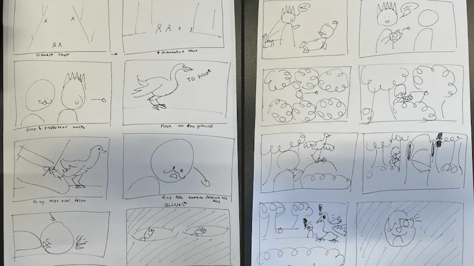

Creative direction
I contributed to developing the trailer's concept and translating our ideas into a visual story through storyboarding.
This involved planning the sequence of scenes, shot compositions and transitions to establish the trailer's atmosphere and narrative.
During production, I took on the main directing role, guiding the scenes and helping ensure that the final footage stayed true to our original vision.